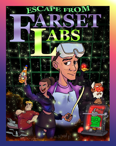

<!DOCTYPE html PUBLIC "-//W3C//DTD HTML 4.01 Transitional//EN" "http://www.w3.org/TR/html4/loose.dtd">
<html>
<head>
  <title>Ciaran Conliffe - Escape From Farset Labs — 1 of 1</title>
  <meta http-equiv="Content-Type" content="text/html;charset=utf-8" />
  <meta name="author" content="Ciaran Conliffe" />
  <meta name="description" content="A page for the game Escape From Farset Labs by Ciaran Conliffe." />
  <link rel="stylesheet" href="style-modified.css" type="text/css" media="all" />
 </head>

<body>

<div class = "container">

	<div class="coverimage"><span><a href="boxart.png"></a></span></div>

<div class ="sourceintroduction">
	<h1>
		<span>Escape From Farset Labs</span> <span class="pagination">— 1 of 1</span>
	</h1>
	<h2>
		<span>Ciaran Conliffe</span>
	</h2>
	<div class ="sourcebibliography">
		<span>Release 1</span>
	</div>
</div>

<div class="links">
	<ul>
		<li><a href="index.html"><h3>Play In-Browser</h3></a></li>
		<li><a href="aboutthisgame.html"><h3>About This Game</h3></a></li>
	<div class="auxiliary">
		<li><a href="introductiontoif.pdf">Interactive Fiction Overview</a> <span class="filetype">(pdf,&nbsp;612KB)</span></li>
		<li><a href="postcard.pdf">IF Basics</a> <span class="filetype">(pdf,&nbsp;256KB)</span></li>
		<li><a href="source.html">Source Text</a> <span class="filetype">(link)</span></li>
		<li><div class="download"><a href="escape from farset labs.gblorb">Story File</a> <span class="filetype">(Blorb,&nbsp;616KB)</span></div></li>
	</div>
	</ul>
</div>

<div class = "source">
<p class="indent0"><span class="heading">&quot;<span class="quote">Escape From Farset Labs</span>&quot; by Ciaran Conliffe</span></p><p class="indent0">Release along with a website, the introductory booklet, an introductory postcard, the source text, and an interpreter.</p><p class="indent0">Include Basic Screen Effects by Emily Short.</p><p class="indent0">SECTION 1 - Story setup</p><p class="indent0">The story headline is &quot;<span class="quote">A thrilling tale of derring-do and 3D printers.</span>&quot;. </p><p class="indent0">The story description is &quot;<span class="quote">Escape From Farset Labs is a light-hearted short interactive fiction game created as an example for the Northern Ireland Developers Conference 2024. If you've never played a game like this before, the idea is that you type in commands to carry out actions. The aim is to figure out how to repair your bike so you can leave the labs and go home.</span></p><p class="indent0"><span class="quote">If you want to play the game, click 'Play In Browser' in the sidebar.</span></p><p class="indent0"><span class="quote">If you want to learn more about this game, or the resources I used to make it, click 'About This Game' in the sidebar.</span></p><p class="indent0"><span class="quote">You can also view the source code by clicking 'Source Text', though of course this will spoil the game for you.</span></p><p class="indent0"><span class="quote">If you're completely new to text adventures, check out the Interactive Fiction Overview in the sidebar, or the IF Basics for a one-page guide. There is also some basic help available within the game itself.</span>&quot;</p><p class="indent0">The story creation year is 2024. Use scoring. The maximum score is 20.</p><p class="indent0">When play begins:</p><p class="indent1">say &quot;<span class="quote">[</span><span class="substitution">paragraph break</span><span class="quote">]It's been another productive day at Farset Labs, a perfect little hackerspace tucked away in the corner of Belfast. But you're done for the day and it's time to go home.</span></p><p class="indent1"><span class="quote">Having put on your coat, and shouldered your backpack, you step out the front door with your bicycle (making sure that it's locked behind you). It's a dark evening, but your bike light is bright and warm. You hop on the reliable machine and head home.</span>&quot;;</p><p class="indent1">wait for any key;</p><p class="indent1">say &quot;<span class="quote">[</span><span class="substitution">paragraph break</span><span class="quote">]Or at least that's the plan. Unfortunately it all goes sideways as you approach the exit from Weaver's Park and try to apply the brakes on your bike to slow down. With a sudden 'snap!' one of the levers gives way, and you have a very exciting few seconds as you turn the bike to try to avoid sailing out into the road. Luckily you manage to avoid disaster, and you walk back to the Labs with your bicycle.</span></p><p class="indent1"><span class="quote">You take a moment to catch your breath, as you take off your coat and hang it up. 'This is fine', you think. The idea of walking home seems awful, but you're a resourceful sort. And you know you're in the perfect place to come up with an alternative solution. You'll apply your maker expertise, and you'll figure out how to...</span>&quot;;</p><p class="indent1">wait for any key;</p><p class="indent1">say &quot;<span class="quote">[</span><span class="substitution">paragraph break</span><span class="quote">]ESCAPE FROM FARSET LABS!</span>&quot;;</p><p class="indent1">say &quot;<span class="quote">[</span><span class="substitution">paragraph break</span><span class="quote">]Type 'help' if you need help.</span>&quot;;</p><p class="indent0"> </p><p class="indent0">SECTION 2 - the map</p><p class="indent0">The Lobby is a room. &quot;<span class="quote">You are standing in the lobby of Farset Labs. A door to the west leads into the common desks area, and a staircase leads up to the co-working floor. To the south is the exit from the building.</span>&quot;</p><p class="indent0">The Desk Area is west of the Lobby. &quot;<span class="quote">An open area filled with desks and monitors, suitable for sitting and coding. It's normally a lively area, though it's deserted this late. If it's peace and quiet you want, then upstairs from the lobby in the co-working area is a better bet. Various facilities are along the north wall, including the lounge. To the west is the events area, or you can head back east to the lobby.</span>&quot;</p><p class="indent0">The Lounge is north of the Desk Area. &quot;<span class="quote">The desk area forms a rough L-shape, and this northern part of the L serves as a lounge. There are some very comfortable sofas, and you're tired enough that they look pretty tempting. There's a small tuck shop here for snacks.</span>&quot;</p><p class="indent0">The Event Area is west of the Desk Area. &quot;<span class="quote">A large open area. Sometimes it's set up with tables for classes or events but currently it's empty. Various posters line the walls. To the west is the workshop, and back east is the desk area.</span>&quot;</p><p class="indent0">The Workshop is west of the Event Area. &quot;<span class="quote">A true maker's paradise, filled with tools and gadgets for crafting electronic devices. There's a small door on the north wall with 'NOT FOR STORAGE' written on it.</span>&quot;</p><p class="indent0">The Co-working Area is up from the Lobby. &quot;<span class="quote">A large open area filled with desks. A sign on the wall gives the rules for using the space.</span>&quot;</p><p class="indent0"><span class="comment">[Let's redefine some directions for playability.]</span></p><p class="indent0">Understand &quot;<span class="quote">upstairs</span>&quot; as up.</p><p class="indent0">Instead of exiting:</p><p class="indent1">say &quot;<span class="quote">Go south from the lobby if you want to leave the building.</span>&quot;;</p><p class="indent0"><span class="comment">[Finishing the game is about leaving the map, if you can.]</span></p><p class="indent0">Instead of going south in the Lobby:</p><p class="indent1">if the bicycle is broken:</p><p class="indent2">say &quot;<span class="quote">You're going nowhere until you've fixed your bike.</span>&quot;;</p><p class="indent1">otherwise if the player is not carrying the backpack and the player is not wearing the backpack:</p><p class="indent2">say &quot;<span class="quote">You can't leave without your backpack.</span>&quot;;</p><p class="indent1">otherwise if the player is not carrying the USB and the USB is not in the backpack:</p><p class="indent2">say &quot;<span class="quote">You can't leave without your USB.</span>&quot;;</p><p class="indent1">otherwise if the player is carrying the resin:</p><p class="indent2">say &quot;<span class="quote">You can't leave without giving the programmer back their resin.</span>&quot;;</p><p class="indent1">otherwise:</p><p class="indent2">end the story saying &quot;<span class="quote">Having repaired your bike and tied up all the loose ends, you're finally able to grab your coat, hop on your bike, and head out into the crisp Belfast evening. Congratulations, you have...</span></p><p class="indent2"><span class="quote">ESCAPED FROM FARSET LABS!</span></p><p class="indent2"><span class="quote">At least until you come back here tomorrow, anyway.</span>&quot;;</p><p class="indent1"></p><p class="indent0">SECTION 3 - Objects</p><p class="indent0">The player is wearing a backpack. The backpack is closed.</p><p class="indent0">The description of the backpack is &quot;<span class="quote">It's battered, but you don't go anywhere without it.</span>&quot;</p><p class="indent0"><span class="comment">[They can't see they have the laptop or USB until they think to open the backpack.]</span></p><p class="indent0">The laptop is in the backpack. The description of the laptop is &quot;<span class="quote">An old and reliable friend. Except today, because the battery is flat and you forgot the charging cable.</span>&quot;</p><p class="indent0">The USB drive is in the backpack. The description of the USB drive is &quot;<span class="quote">A small portable data storage device, able to slot into all manner of devices.</span>&quot; The USB drive can be full or empty. The USB is empty.</p><p class="indent0"><span class="comment">[Awkward name due to how Inform 7 handles nouns.]</span></p><p class="indent0">The some loose change is an object. The description is &quot;<span class="quote">A collection of coins.</span>&quot;</p><p class="indent0">The coat is in the Lobby. &quot;<span class="quote">Your coat is hanging on the coat-rack.</span>&quot; The description is &quot;<span class="quote">A comfortable dark blue windbreaker. There's a variety of things in the pockets.</span>&quot; Understand &quot;<span class="quote">pockets</span>&quot; as the coat.</p><p class="indent0">The bicycle is in the lobby. &quot;<span class="quote">Your bicycle is leaning against one of the walls.</span>&quot; The bicycle can be broken or fixed. The bicycle is broken. The description is &quot;<span class="quote">Your trusty steed, and the only way you'd consider getting home[</span><span class="substitution">if the bicycle is broken</span><span class="quote">] though you'll need to find some way to control the brakes first[</span><span class="substitution">end if</span><span class="quote">].</span>&quot; Understand &quot;<span class="quote">bike</span>&quot; as the bicycle.</p><p class="indent0"><span class="comment">[Cheating a little here - Inform will treat the bicycle like a surface that can have things put on it now.]</span></p><p class="indent0">The broken brake lever is on the bicycle.  The description is &quot;<span class="quote">A snapped brake lever, made from hard plastic. It dangles forlornly from its cable.</span>&quot; </p><p class="indent0">The fridge is in the Lounge. &quot;<span class="quote">A small mini-fridge sits in one corner of the lounge as part of the tuck shop. It contains various soft drinks.</span>&quot;  Understand &quot;<span class="quote">mini-fridge</span>&quot; as the fridge. The fridge is fixed in place. </p><p class="indent0">The fridge contains a Club Mate. The description of the Club Mate is &quot;<span class="quote">A sparkling caffeinated beverage, made from the yerba mate plant. It's very much an acquired taste, but most of the programmers here at the Labs love the stuff.</span>&quot; Understand &quot;<span class="quote">drink</span>&quot; as the mate.</p><p class="indent0">The toolrack is in the Workshop. &quot;<span class="quote">A toolrack hangs along the eastern wall.</span>&quot; The toolrack is fixed in place. Rule for deciding the concealed possessions of the toolrack: yes. The description is &quot;<span class="quote">A collection of useful tools in various containers.</span>&quot; Understand &quot;<span class="quote">rack</span>&quot; as the toolrack.</p><p class="indent0">The screwdriver is in the toolrack. The description is &quot;<span class="quote">A small screwdriver, the right size for the screws on your brake handle.</span>&quot;</p><p class="indent0">The 3D scanner is in Workshop. &quot;<span class="quote">A large 3D scanner sits in one corner of the workshop.</span>&quot; The 3D scanner is fixed in place. The description is &quot;<span class="quote">A 3D scanner. You could scan a small object in it, if you had a USB drive to save the results to.</span>&quot;</p><p class="indent0">The 3D printer is in the workshop. &quot;<span class="quote">A large 3D printer sits in another corner of the workshop.</span>&quot; The 3D printer is fixed in place. The description is &quot;<span class="quote">A magical device that lets you create anything you want, as long as the thing you want is made out of a single piece of plastic. If you want to print something out then just 'use' the printer. There's a holder at the side for the plastic resin.</span>&quot;</p><p class="indent0">The repaired brake lever is a thing. The description is &quot;<span class="quote">A perfect replica of your brake lever. It's not the most sturdy, but it's good enough to get you home once you put it on your bike.</span>&quot;</p><p class="indent0"><span class="comment">[The three-part state is to have it behave differently in the initial empty state versus when it's been used. There is probably a more elegant way to handle it.]</span></p><p class="indent0">The holder is part of the 3D printer. The holder can be ready or unready or unneeded. The holder is unready. The description of the holder is &quot;<span class="quote">A small reservoir designed to hold the plastic resin you use to print something out. [</span><span class="substitution">if the holder is ready</span><span class="quote">]It's got enough resin in it to print something out[</span><span class="substitution">otherwise</span><span class="quote">]It's empty[</span><span class="substitution">end if</span><span class="quote">].</span>&quot;</p><p class="indent0">The Programmer is in the Co-working Area. &quot;<span class="quote">Someone else has stayed here late. A programmer is working away on some absorbing problem.</span>&quot; </p><p class="indent0"><span class="comment">[We hide their possessions so you can't see they have the resin.]</span></p><p class="indent0">The Programmer is a person. The Programmer can be absorbed or attentive. The Programmer is absorbed. The description is &quot;<span class="quote">One of your fellow Farsetteers. They are absorbed in their work. An empty bottle of Club Mate is on the desk next to them.</span>&quot; Rule for deciding the concealed possessions of the programmer: yes. </p><p class="indent0">The programmer holds the bottle of plastic resin. The description of the plastic resin is &quot;<span class="quote">A small bottle of plastic resin for use in a 3D printer.</span>&quot;</p><p class="indent0">SECTION 4 - Interrupts of actions</p><p class="indent0">instead of giving the resin to the Programmer:</p><p class="indent1">if the holder is unready:</p><p class="indent2">say &quot;<span class="quote">You should probably hang onto that until you've used it.</span>&quot;;</p><p class="indent1">otherwise:</p><p class="indent2">say &quot;<span class="quote">You put the bottle of resin on the desk next to the programmer. You don't think they notice.</span>&quot;;</p><p class="indent2">remove the resin from play;</p><p class="indent2">increase the score by 1;</p><p class="indent0">Instead of taking or dropping the laptop:</p><p class="indent1">say &quot;<span class="quote">Better not. You don't want to forget it.</span>&quot;</p><p class="indent0">Instead of taking something which is on the bicycle when the player is not carrying the screwdriver:</p><p class="indent1">say &quot;<span class="quote">You'll need to loosen the screws to do that.</span>&quot;</p><p class="indent0">Instead of taking something which is on the bicycle when the player is carrying the screwdriver:</p><p class="indent1">say &quot;<span class="quote">You loosen the screws and remove the broken brake lever.</span>&quot;;</p><p class="indent1">move the broken brake lever to the player;</p><p class="indent1">increase the score by 1;</p><p class="indent0">Instead of putting something on the bicycle:</p><p class="indent1">if the noun is the repaired brake lever and the player is carrying the screwdriver:</p><p class="indent2">say &quot;<span class="quote">You attach the brake lever to the bicycle with the screwdiver. Before you forget you go to the workshop and return it to the rack, before coming back to the lobby.</span>&quot;;</p><p class="indent2">now the bicycle is fixed;</p><p class="indent2">remove the repaired brake lever from play;</p><p class="indent2">remove the screwdriver from play;</p><p class="indent2">increase the score by 2;</p><p class="indent1">otherwise if the noun is the repaired brake lever:</p><p class="indent2">say &quot;<span class="quote">You'll need the screwdriver for that.</span>&quot;;</p><p class="indent1">otherwise if the noun is the broken brake lever:</p><p class="indent2">say &quot;<span class="quote">There's no point in putting that back on the bike, it's broken.</span>&quot;;</p><p class="indent1">otherwise: </p><p class="indent2">say &quot;<span class="quote">There's no point in putting that on the bicycle.</span>&quot;</p><p class="indent0">Instead of taking the coat:</p><p class="indent1">say &quot;<span class="quote">It's warm enough in here, so you don't feel like wearing your coat. If you want something from it, try searching it instead.</span>&quot;</p><p class="indent1"></p><p class="indent0"><span class="comment">[&quot;for the first time&quot; is needed to avoid an infinite score bug.]</span></p><p class="indent0">Instead of searching the coat for the first time:</p><p class="indent1">say &quot;<span class="quote">You find a handful of loose change in the coat's pockets.</span>&quot;;</p><p class="indent1">move some loose change to the player;</p><p class="indent1">increase the score by 1;</p><p class="indent0"><span class="comment">[We interrupt examining the fridge so it doesn't show the contents.]</span></p><p class="indent0">Instead of examining the fridge:</p><p class="indent1">if the fridge contains the mate:</p><p class="indent2">say &quot;<span class="quote">The fridge contains a variety of soft drinks. The Club Mate catches your eye.</span>&quot;;</p><p class="indent1">otherwise:</p><p class="indent2">say &quot;<span class="quote">None of what's left in the fridge particularly interests you.</span>&quot;;</p><p class="indent0">Instead of buying the mate:</p><p class="indent1">try taking the mate;</p><p class="indent0">Instead of taking something which is in the fridge when the player is not carrying the some loose change:</p><p class="indent1">say &quot;<span class="quote">The honesty system forbids you from taking something without paying for it, and you've left your coins in your coat.</span>&quot;</p><p class="indent1"></p><p class="indent0">Instead of taking something which is in the fridge when the player is carrying the some loose change:</p><p class="indent1">say &quot;<span class="quote">You put the money for it in the honesty box, and take the Club Mate.</span>&quot;;</p><p class="indent1">move the Club Mate to the player;</p><p class="indent1">increase the score by 1;</p><p class="indent0">Instead of opening the fridge:</p><p class="indent1">try examining the fridge.</p><p class="indent1"></p><p class="indent0">Instead of drinking the mate:</p><p class="indent1">say &quot;<span class="quote">You aren't thirsty, but maybe someone else is.</span>&quot;;</p><p class="indent1"></p><p class="indent0">Instead of inserting something into the fridge:</p><p class="indent1">say &quot;<span class="quote">The fridge is part of the tuck shop, it's not for general storage.</span>&quot;</p><p class="indent0">Instead of examining the toolrack when the screwdriver is in the toolrack:</p><p class="indent1">say &quot;<span class="quote">You notice a screwdriver that would work for removing your broken brake lever and take it.</span>&quot;;</p><p class="indent1">move the screwdriver to the player;</p><p class="indent1">increase the score by 2;</p><p class="indent0">Instead of inserting something into the 3D scanner:</p><p class="indent1">say &quot;<span class="quote">Use 'scan object' to scan it.</span>&quot;</p><p class="indent3"></p><p class="indent0">Instead of inserting something into the holder:</p><p class="indent1">say &quot;<span class="quote">It wouldn't fit. If you want to put a liquid in the holder, pour it in.</span>&quot;</p><p class="indent1"></p><p class="indent0">Instead of going north in the Workshop:</p><p class="indent1">say &quot;<span class="quote">You can't get the door open because of all the stuff stored in there.</span>&quot;</p><p class="indent0">Instead of giving the Club Mate to the Programmer:</p><p class="indent1">say &quot;<span class="quote">The programmer grabs the Club Mate from your hand, flicking the lid off in an astounding display of finger strength. They drink half the bottle in one swallow, then look around and notice you for the first time.</span>&quot;;</p><p class="indent1">say &quot;<span class="quote">The programmer pops their earphones out and says: 'Hi! Thanks for that. What's up?'</span>&quot;;</p><p class="indent1">now the Programmer is attentive;</p><p class="indent1">move the Club Mate to the Programmer;</p><p class="indent1">increase the score by 3;</p><p class="indent1">now the description of the Programmer is &quot;<span class="quote">One of your fellow Farsetteers. They are looking at you attentively to see what you need. Try talking to them.</span>&quot;</p><p class="indent1"></p><p class="indent0">Instead of opening the mate:</p><p class="indent1">say &quot;<span class="quote">But then all the fizz will go out of it!</span>&quot;;</p><p class="indent0">SECTION 5 - Custom actions</p><p class="indent0">Using is an action applying to one thing. Understand &quot;<span class="quote">use [</span><span class="substitution">something</span><span class="quote">]</span>&quot; as using.</p><p class="indent0">check using:</p><p class="indent1">if the noun is the printer and the holder is ready and the usb is visible and the usb is full:</p><p class="indent2">say &quot;<span class="quote">You create a perfect replica of the broken brake lever, except (crucially) not broken. Since you no longer need the broken one, you drop it in a recycle bin.</span>&quot;;</p><p class="indent2">move the repaired brake lever to the player;</p><p class="indent2">remove the broken brake lever from play;</p><p class="indent2">now the holder is unneeded;</p><p class="indent2">increase the score by 5;</p><p class="indent1">otherwise if the noun is the printer and the holder is ready and the usb is visible:</p><p class="indent2">say &quot;<span class="quote">You'd need some schematics of something you scanned in so that you can print it out.</span>&quot;;</p><p class="indent1">otherwise if the noun is the printer and the holder is ready:</p><p class="indent2">say &quot;<span class="quote">You need a USB with schematics to plug into the printer.</span>&quot;;</p><p class="indent1">otherwise if the noun is the printer:</p><p class="indent2">say &quot;<span class="quote">You can't print anything out without any resin in the printer.</span>&quot;;</p><p class="indent1">otherwise if the noun is the scanner:</p><p class="indent2">say &quot;<span class="quote">If you want to scan something, just type 'scan (something)'.</span>&quot;;</p><p class="indent1">otherwise if the noun is the mate and the programmer is visible:</p><p class="indent2">try giving the mate to the programmer;</p><p class="indent1">otherwise:</p><p class="indent2">say &quot;<span class="quote">Use it for what?</span>&quot;;</p><p class="indent0">Using it on is an action applying to two things. Understand &quot;<span class="quote">use [</span><span class="substitution">something</span><span class="quote">] on [</span><span class="substitution">something</span><span class="quote">]</span>&quot; as using it on.</p><p class="indent1"></p><p class="indent0">Check using it on:</p><p class="indent1">if the noun is the screwdriver and the second noun is the bicycle and the broken brake lever is on the bicycle:</p><p class="indent2">try taking the lever;</p><p class="indent1">otherwise if the noun is the screwdriver and the second noun is the broken brake lever and the broken brake lever is on the bicycle:</p><p class="indent2">try taking the lever;</p><p class="indent1">otherwise if the noun is the mate and the second noun is the programmer:</p><p class="indent2">try giving the mate to the programmer;</p><p class="indent1"></p><p class="indent0">Scanning is an action applying to one carried thing. Understand &quot;<span class="quote">scan [</span><span class="substitution">something</span><span class="quote">]</span>&quot; as scanning.</p><p class="indent0">Check scanning:</p><p class="indent1">if the location is not the Workshop:</p><p class="indent2">say &quot;<span class="quote">You'd need to use a 3D scanner for that.</span>&quot;;</p><p class="indent1">otherwise if the noun is the broken brake lever:</p><p class="indent2">if the USB drive is full:</p><p class="indent3">say &quot;<span class="quote">You already did that.</span>&quot;;</p><p class="indent2">otherwise if the player carries the broken brake lever and the USB drive is visible:</p><p class="indent3">say &quot;<span class="quote">You put the broken brake lever into the scanner, arranging it so the cracked edges are flush against each other. Then you plug the USB drive into the scanner and download a scan of the broken lever to it.</span>&quot;;</p><p class="indent3">now the USB drive is full;</p><p class="indent3">increase the score by 3;</p><p class="indent2">otherwise:</p><p class="indent3">say &quot;<span class="quote">You'll need a USB drive for that.</span>&quot;;</p><p class="indent1">otherwise:</p><p class="indent2">say &quot;<span class="quote">There's no point in scanning [</span><span class="substitution">the noun</span><span class="quote">].</span>&quot;</p><p class="indent2"></p><p class="indent0">Pouring it into is an action applying to two visible things. </p><p class="indent0">Understand &quot;<span class="quote">pour [</span><span class="substitution">something preferably held</span><span class="quote">] into [</span><span class="substitution">something</span><span class="quote">]</span>&quot; as pouring it into.</p><p class="indent0">Understand &quot;<span class="quote">pour [</span><span class="substitution">something preferably held</span><span class="quote">] in [</span><span class="substitution">something</span><span class="quote">]</span>&quot; as pouring it into.</p><p class="indent0">Check pouring it into:</p><p class="indent1">if the noun is the resin and the second noun is the holder and the holder is unready:</p><p class="indent2">say &quot;<span class="quote">You pour enough resin into the holder to print out one medium-sized plastic object.</span>&quot;;</p><p class="indent2">now the holder is ready;</p><p class="indent1">otherwise if the noun is the resin and the second noun is the holder and the holder is ready:</p><p class="indent2">say &quot;<span class="quote">There's no point in adding more resin.</span>&quot;;</p><p class="indent1">otherwise if the noun is the resin and the second noun is the holder and the holder is unneeded:</p><p class="indent2">say &quot;<span class="quote">You've already printed the new lever, there's no point in adding more resin.</span>&quot;;</p><p class="indent1">otherwise if the noun is the mate and the second noun is the holder:</p><p class="indent2">say &quot;<span class="quote">That would be a waste of a perfectly fine beverage, and not very good for the printer.</span>&quot;;</p><p class="indent1">otherwise if the noun is the resin:</p><p class="indent2">say &quot;<span class="quote">That would be a waste, and make a mess.</span>&quot;;</p><p class="indent1">otherwise if the noun is the mate:</p><p class="indent2">say &quot;<span class="quote">That would be a waste, and make a mess.</span>&quot;;</p><p class="indent1">otherwise:</p><p class="indent2">say &quot;<span class="quote">That's not something you can pour.</span>&quot;;</p><p class="indent2"></p><p class="indent2"></p><p class="indent0">Talking is an action applying to one thing. Understand &quot;<span class="quote">talk [</span><span class="substitution">someone</span><span class="quote">]</span>&quot; as talking. Understand &quot;<span class="quote">talk to [</span><span class="substitution">someone</span><span class="quote">]</span>&quot; as talking.</p><p class="indent0">check talking:</p><p class="indent1">if the noun is not the Programmer: </p><p class="indent2">say &quot;<span class="quote">You have a fascinating, if one-sided, conversation with it.</span>&quot;;</p><p class="indent1">otherwise if the Programmer is absorbed and the Programmer holds the resin:</p><p class="indent2">say &quot;<span class="quote">No joy, they're way too intent on their work. You'll need to capture their attention somehow.</span>&quot;;</p><p class="indent1">otherwise if the Programmer is absorbed:</p><p class="indent2">say &quot;<span class="quote">They're back at work, as absorbed as ever. You hope they remember to go home some time.</span>&quot;;</p><p class="indent1">otherwise if the Programmer holds the plastic resin:</p><p class="indent2">say &quot;<span class="quote">'Thanks for the drink,' they say. 'I lost track of time - you know how it is. How come you're still here?'</span>&quot;;</p><p class="indent2">say &quot;<span class="quote">You explain your problem. They grin, and hand you something.</span>&quot;;</p><p class="indent2">say &quot;<span class="quote">'This should help, I think,' they say. 'Just drop it back up here when you're done.'</span>&quot;;</p><p class="indent2">move the resin to the player;</p><p class="indent2">increase the score by 1;</p><p class="indent2">now the Programmer is absorbed;</p><p class="indent2">now the description of the Programmer is &quot;<span class="quote">They're back at work, as absorbed as ever. You hope they remember to go home some time.</span>&quot;;</p><p class="indent0">SECTION 7 - Easter eggs</p><p class="indent0">The BSides Belfast poster is in the Event Area. &quot;<span class="quote">A bright orange and red poster catches your eye.</span>&quot; The poster is fixed in place. The description is &quot;<span class="quote">A poster for BSides Belfast 2023, a local information security conference. It shows a magnificent drawing of a phoenix roosting on the Harland and Woolf cranes that form part of the BSides Belfast logo. It doesn't help you with your current problems, but it does cheer you up to remember there is more to life than this.</span>&quot;</p><p class="indent0">The NIDC poster is in the Desk Area. &quot;<span class="quote">An NIDC poster is hung on the wall.</span>&quot; The poster is fixed in place. The description is &quot;<span class="quote">This poster advertises NIDC's meetup week, where they team up with smaller IT community get-togethers to run a series of events showcasing the work local developers are doing. It doesn't help you with your current problems, but it does inspire you to think that there must be a creative solution to your problem.</span>&quot;</p><p class="indent0">The Battlebots Arena is in the workshop. &quot;<span class="quote">The Battlebots Arena lurks between the 3D printer and the 3D scanner.</span>&quot; The description is &quot;<span class="quote">This perspex cube is transported to various locations around Ireland by the HackrBattlebots team for small robotic gladiators to fight it out. DuckBot, a personal favourite, is sitting in the middle of the arena. It doesn't help directly in your current predicament, but it fires up your spirit and inspires you to keep going on.</span>&quot;  The arena is fixed in place.</p><p class="indent0"><span class="comment">[We want to make the door an object so we can do the joke, but we don't want to to appear as one in the room, so it's 'undescribed'. This is very handy for puzzles.]</span></p><p class="indent0">The small door is in the workshop. The small door is undescribed. The small door is fixed in place.</p><p class="indent0">Instead of going north in the Workshop:</p><p class="indent1">say &quot;<span class="quote">You can't get the door open because of all the stuff stored in there.</span>&quot;</p><p class="indent0">Instead of opening the small door:</p><p class="indent1">say &quot;<span class="quote">You can't get the door open because of all the stuff stored in there.</span>&quot;</p><p class="indent0"><span class="comment">[The description here is worded to take account of the fact that 'read' is treated as a synonym of 'examine' by default.]</span></p><p class="indent0">The stack of comics is in the lounge. &quot;<span class="quote">A pile of comics on a table next to some soft seats tempts you.</span>&quot; The description of the comics is &quot;<span class="quote">You'd love to sit down and read your way through the stack, but it's getting late and you want to get home.</span>&quot;</p><p class="indent0">instead of taking the comics:</p><p class="indent1">say &quot;<span class="quote">They're not yours, so you should leave them for other people to read.</span>&quot;</p><p class="indent0">The green plastic skull is in the lounge. &quot;<span class="quote">A green plastic skull grins toothily at you from a shelf.</span>&quot; The description is &quot;<span class="quote">A green skull, 3D printed in durable plastic. [</span><span class="substitution">if the holder is not unneeded</span><span class="quote">]The sight of it suggests a possible solution to your problem[</span><span class="substitution">otherwise</span><span class="quote">]You hope the plastic is durable enough to hold up as a brake lever[</span><span class="substitution">end if</span><span class="quote">].</span>&quot;</p><p class="indent0">Instead of taking the skull:</p><p class="indent1">say &quot;<span class="quote">You couldn't possibly desecrate a fixture of the labs like that.</span>&quot;</p><p class="indent0">The graffiti is in the event area. &quot;<span class="quote">Colourful graffiti is chalked all over the walls.</span>&quot; The graffiti is fixed in place.</p><p class="indent0"><span class="comment">[This is entirely to show off how you can randomise things.]</span></p><p class="indent0">A scribble is a kind of thing.</p><p class="indent0">The first scrawl is an object. The first scrawl is a scribble. The description is &quot;<span class="quote">Someone has written 'KILROY WOZ HERE'. How original.</span>&quot;</p><p class="indent0">The second scrawl is an object. The second scrawl is a scribble. The description is &quot;<span class="quote">You spot the slogan'HACK THE PLANET!!' Must be from movie night.</span>&quot;</p><p class="indent0">The third scrawl is an object. The third scrawl is a scribble. The description is &quot;<span class="quote">You see an artistically excellent drawing of the Belfast cranes, destined to vanish when the chalk is cleaned.</span>&quot;</p><p class="indent0">The fourth scrawl is an object. The fourth scrawl is a scribble. The description is &quot;<span class="quote">You see Bob. You hope Bob doesn't see you.</span>&quot;.</p><p class="indent0">instead of examining the graffiti:</p><p class="indent1">say the description of a random scribble.</p><p class="indent0">SECTION 7 - Help and other text dumps</p><p class="indent0">Help is an action applying to nothing. Understand &quot;<span class="quote">help</span>&quot; as help.</p><p class="indent0">Check help:</p><p class="indent1">say &quot;<span class="quote">Hello and welcome to Escape From Farset Labs, a light-hearted short interactive fiction game created as an example for the Northern Ireland Developers Conference 2024. If youve never played a game like this before, the idea is that you type in commands to carry out actions. The aim is to figure out how to repair your bike so you can leave the labs and go home. </span></p><p class="indent1"><span class="quote">If you're completely new to the concept of interactive fiction, then check out the Interactive Fiction Overview linked in the sidebar. There's also an IF Basics one-page guide.</span></p><p class="indent1"><span class="quote">Alternatively you can type in help-commands to get a list of basic commands, or help-spoiler-commands' to get a list of everything you can do. (As the name suggests, this will spoil a few puzzles.) </span></p><p class="indent1"><span class="quote">Finally if youve never heard of Farset Labs, type in who-are-farset to learn more about it.</span>&quot;</p><p class="indent1"></p><p class="indent0">Help-commands is an action applying to nothing. Understand &quot;<span class="quote">help-commands</span>&quot; as help-commands.</p><p class="indent0">Check help-commands:</p><p class="indent1">say &quot;<span class="quote">Use the following basic commands to play this game:</span></p><p class="indent1"><span class="quote">- Enter a direction (north, south, east, west, up, or down) to move. You can also just enter the first letter of a direction.</span></p><p class="indent1"><span class="quote">- Enter 'inventory' (or 'inv', or 'i') so see what you're carrying.</span></p><p class="indent1"><span class="quote">- You can 'get' an item to try and pick it up, and 'drop' an item to put it down.</span></p><p class="indent1"><span class="quote">- If you want to learn more about an item you can 'examine' (or 'x') it.</span></p><p class="indent1"><span class="quote">There are a lot of other things you can do too. For a full list of available commands used in this game, enter 'help-spoiler-commands'.</span>&quot;</p><p class="indent1"></p><p class="indent0">Help-spoiler-commands is an action applying to nothing. Understand &quot;<span class="quote">help-spoiler-commands</span>&quot; as help-spoiler-commands.</p><p class="indent0">Check help-spoiler-commands:</p><p class="indent1">say &quot;<span class="quote">The following commands are used in this game:</span></p><p class="indent1"><span class="quote">north</span></p><p class="indent1"><span class="quote">south</span></p><p class="indent1"><span class="quote">east</span></p><p class="indent1"><span class="quote">west</span></p><p class="indent1"><span class="quote">up</span></p><p class="indent1"><span class="quote">down</span></p><p class="indent1"><span class="quote">examine</span></p><p class="indent1"><span class="quote">inventory</span></p><p class="indent1"><span class="quote">get</span></p><p class="indent1"><span class="quote">put</span></p><p class="indent1"><span class="quote">search</span></p><p class="indent1"><span class="quote">give</span></p><p class="indent1"><span class="quote">open</span></p><p class="indent1"><span class="quote">scan</span></p><p class="indent1"><span class="quote">print</span></p><p class="indent1"><span class="quote">talk</span></p><p class="indent1"><span class="quote">use</span></p><p class="indent1"><span class="quote">In some cases alternative words will work.</span>&quot;</p><p class="indent1"></p><p class="indent0">Who-are-farset is an action applying to nothing. Understand &quot;<span class="quote">who-are-farset</span>&quot; as who-are-farset.</p><p class="indent0">Check who-are-farset:</p><p class="indent1">say &quot;<span class="quote">Farset Labs are a Belfast-based open community of students, professionals, academics, freelancers, artists, hackers, and organizers that believe strongly in experimental learning and the Do-It-Yourself ethic. We facilitate technology initiatives and encourage hands-on learning by maintaining a workshop and creative space that is available to members. We maintain an inclusive membership policy, and strive to apply the principles of the open-software and open-hardware movements within our design policies. The name 'Farset' comes from the ancient river that Belfast is built on. To learn more visit https://www.farsetlabs.org.uk.</span>&quot;</p><p class="indent1"></p><p class="indent0">SECTION 7 - Testing</p><p class="indent0">Test first with &quot;<span class="quote">search coat / w / n / get mate / s / e / u / give mate / talk / d</span>&quot;.</p><p class="indent0">Test second with &quot;<span class="quote">w / w / w / x rack / e / e / e / get lever / w / w / w </span>&quot;.</p><p class="indent0">Test third with &quot;<span class="quote">open backpack / scan lever / pour resin into holder / use printer</span>&quot;.</p><p class="indent0">Test fourth with &quot;<span class="quote">e / e / e / put repaired lever on bike / u / give resin / d / s</span>&quot;.</p><p class="indent0">Test me with &quot;<span class="quote">test first / test second / test third / test fourth</span>&quot;.</p><p class="indent0">Test mapwalking with &quot;<span class="quote">w / n / s / w / w / e / e / e / u / d</span>&quot;</p><p class="indent0">Test eggs with &quot;<span class="quote">w / n / x skull / get skull / x comics / get comics / s / w / x graffiti / x poster / w / x arena /open door / e / e / e</span>&quot;.</p>
</div>

<div class ="notes">

</div>

</div>

</body>

</html>
